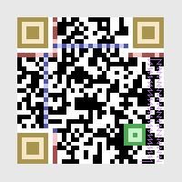
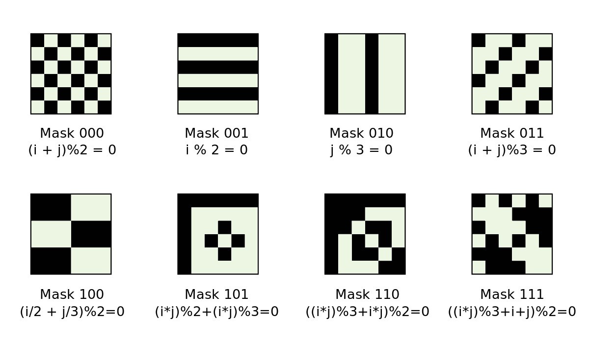

Anatomy of QR Codes
9 / 7 / 21
We are surrounded by barcodes of all sorts that people usually don't stop and think about. There's quite a bit of complexity behind matrix barcodes like the QR (Quick Response) code that I'd like to spend a bit of time breaking down to some degree. There is a lot of math behind the error correction we'll leave out here (I want the main takeaway to be the basic structure of these codes) but I found this amazing website that covers everything in extreme detail.
To start, here is an image of a QR code with the main regions highlighted:

Gray: Quiet Zone, Yellow: Finder Patterns, Green: Allignment Pattern,
Blue: Timing Patterns, Red: Format Information, Purple: Data
Finder and Timing Patterns
Both the large finder patterns in the corners of the code and the horizontal and vertical timing patterns serve to make the code more readable by computer vision. These are relatively easy to consistently find in an image and can then be used to evaluate the rest of the grid. Another thing to notice is the lonely pixel by the bottom left finder pattern. This is called the dark module and is a square which is always black on all QR codes.
Format Information
The format information is written twice near the top left finder pattern and broken in two along the other two finder patterns. The format string is always 15 bits long. The first two bits describe the error correction level 00 (M), 01 (L), 10 (H), and 11 (Q). The various error correction levels have different data restoration capabilites. L can restore approximately 7% of the data, M - 15%, Q - 25%, and H - 30%. These enable us to intentionally cover relatively large portions of QR codes to make artistic renditions of them that will still scan properly. The next three bits describe the mask pattern, the options of which are listed below:
